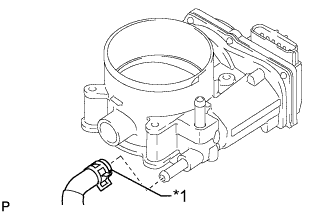
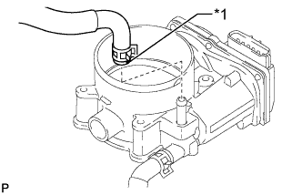
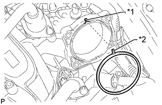
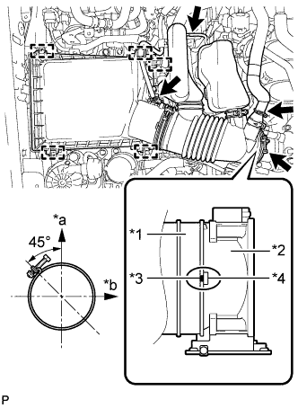

THROTTLE BODY > INSTALLATION |
| 1. INSTALL THROTTLE BODY ASSEMBLY |
|  |
Install the No. 4 water by-pass hose to the throttle body.
| *1 | Paint Mark |
|  |
Install the No. 12 water by-pass hose to the throttle body.
| *1 | Paint Mark |
|  |
Align the protrusion of a new gasket with the groove of the intake air surge tank and install the gasket to the intake air surge tank.
| *1 | Groove |
| *2 | Protrusion |
Install the throttle body with the 4 bolts.
 |
Connect the throttle position sensor and control motor connector.
Connect the No. 4 water by-pass hose and No. 12 water by-pass hose.
| *1 | Paint Mark |
| *a | Upper Side |
| *b | Lower Side |
| *c | 13 to 17 mm (0.511 to 0.669 in.) |
| *d | 5 mm (0.197 in.) |
| 2. INSTALL AIR CLEANER CAP AND HOSE |
|  |
Attach the 4 clamps to install the air cleaner cap and hose.
| *1 | Air Cleaner Hose |
| *2 | Throttle Body |
| *3 | Groove |
| *4 | Protrusion |
| *a | Upper Side |
| *b | Front |
Tighten the hose clamp.
Connect the mass air flow meter connector, No. 1 air hose and No. 2 ventilation hose and attach the wire harness clamp.
| 3. ADD ENGINE COOLANT |
Add engine coolant.
Slowly pour coolant into the radiator reservoir until it reaches the F line.
Install the reservoir cap.
Install the radiator cap.*1
Start the engine and stop it immediately.*2
Allow approximately 10 seconds to pass. Then remove the radiator cap and check the coolant level. If the coolant level has decreased, add coolant.*3
Repeat steps *1, *2 and *3 until the coolant level does not decrease.
Install the radiator cap.*4
Set the air conditioning as follows.*5
| Item | Condition |
| Fan speed | Any setting except off |
| Temperature | Toward WARM |
| Air conditioning switch | Off |
Start the engine, warm it up until the thermostat opens, and then continue to run the engine for several minutes to circulate the coolant.*6
Stop the engine and wait until the engine coolant cools down to ambient temperature. Then remove the radiator cap and check the coolant level.*7
If the coolant level has decreased, add coolant and warm up the engine until the thermostat opens.*8
If the coolant level has not decreased, check that the coolant level in the radiator reservoir is at the F line.
If the coolant level is below the F line, repeat steps *4 through *8.
If the coolant level is above the F line, drain coolant until the coolant level reaches the F line.
| 4. INSPECT FOR COOLANT LEAK |
Fill the radiator with coolant and attach a radiator cap tester.
Warm up the engine.
Using the radiator cap tester, increase the pressure inside the radiator to 118 kPa (1.2 kgf/cm2, 17 psi), and check that the pressure does not drop.
If the pressure drops, check the hoses, radiator and water pump for leaks. If no external leaks are found, check the heater core, cylinder block and head.
| 5. INSTALL NO. 1 ENGINE UNDER COVER SUB-ASSEMBLY |
 |
Hook the No. 1 engine under cover to the vehicle body as shown in the illustration.
Install the 4 bolts.
| 6. INSTALL LOWER FRONT BUMPER COVER |
Install the lower front bumper cover with the 5 bolts and clip.
| 7. INSTALL V-BANK COVER SUB-ASSEMBLY |
 |
Attach the 2 V-bank cover hooks to the No. 1 V-bank cover bracket. Then align the 2 V-bank cover grommets with the 2 pins and press down on the V-bank cover to attach the pins.
| *1 | Pin |
| *2 | Grommet |
| *3 | Hook |
| *4 | No. 1 V-bank Cover Bracket |
| 8. PERFORM INITIALIZATION |
Disconnect the EFI fuse, wait at least 60 seconds, and then reconnect the fuse.
Turn the engine switch on (IG) without operating the accelerator pedal.
Connect the intelligent tester to the DLC3 and clear the DTCs (Click here).
Start the engine and check that the MIL is not illuminated and that the idle speed is within the specified range when the A/C is switched off after the engine is warmed up.
| Condition | Engine Idle Speed |
| A/C switched off | 550 to 780 rpm |
Enter the following menus: Powertrain / Engine and ETC / Data List / All Data / Throttle Sensor Position. Sensor Output. Fully depress the accelerator pedal and check that the value is 60% or more.
Perform a road test and confirm that there are no abnormalities.